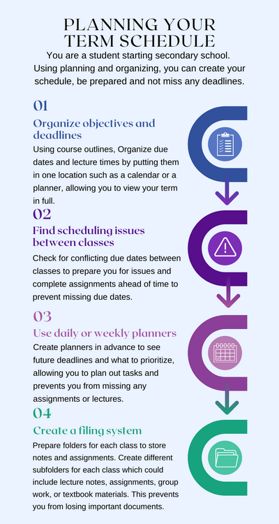

Organizing and Planning
Organizing
Organizing allows you to combine and sort information in a deliberate manner. This can be used within the planning process or during the research/designing phase of a project (Figliuolo, 2015). Organizing involves being goal-orientated and defining priorities, which help ensure objectives are accomplished. This becomes important when taking on projects at work or school that require meeting goals on time.
Planning
Planning is used to coordinate communication and set deadlines to meet a certain goal. When working within a team, planning can also include defining roles, splitting up tasks and responsibilities (Miller, 2022). This strategy can improve time management, multitasking, and problem-solving skills. These skills become crucial in the real world when communicating with colleagues and can even be used to achieve personal goals. Effective use of planning can help build up confidence in yourself and others.
Example
You are a student who just started secondary school and you want to make sure everything is in order before your term starts. You already have your courses planned and wish to use organizing and planning so you can be prepared and not miss any deadlines.
Step 1:
Organize objectives/deadlines – Most courses give you a course outline before the term starts. Organize important deadlines/due dates, lecture times, and holidays from your outlines by putting them in one location such as a calendar or a planner. This will make it easier for you to view your term in full.
Step 2:
Assess scheduling issues between classes – Once your schedules are organized, check for any conflicting due dates or tests between your classes. This allows you to prepare for the issues and complete some assignments ahead of time to prevent missing any due dates or handing in assignments late.
Step 3:
Use daily or weekly planners – Create your planners a week or two in advance to be able to see future deadlines and what needs to be prioritized. This allows you to plan out your short-term tasks and helps prevent you from missing any assignments or lectures.
Step 4:
Create a filing system - Prepare folders for each one of your classes to keep notes and assignments organized on your computer or another storage option. Create different subfolders for each class which could include lecture notes, assignments, group work, or textbook materials. Organizing folders in advance can prevent you from losing important documents.